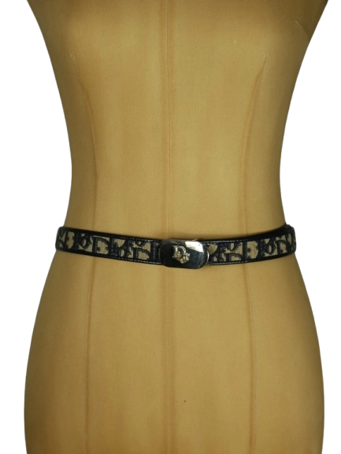

1 / 18Aus dem kuratierten Archiv von Disorder119. Ein schlanker Christian Dior Gürtel mit klassischem Dior-Monogramm in Beige und Schwarz. Das schmale Band kombiniert eine strukturierte Monogramm-Textiloberfläche mit einer schwarzen Lederinnenseite und vermittelt die charakteristische Balance zwischen Eleganz und subtiler Logopräsenz, für die das Haus Dior seit Jahrzehnten steht. Die polierte Metallschließe trägt das ikonische CD-Monogramm und setzt einen ruhigen, luxuriösen Akzent. Durch seine schmale Silhouette eignet sich der Gürtel besonders gut für elegante Hosen, Röcke oder als feines Stylingdetail über Kleidern und Blazern. Ein zeitloses Accessoire aus der klassischen Dior-Linie, das sich mühelos in verschiedenste Garderoben integrieren lässt. Details: Marke: Christian Dior Farbe: Schwarz / Beige Größe: 80 Passform: Schmaler Taillengürtel Verschluss: Metallschließe mit CD-Logo Material: Leder / Textil (Monogramm-Canvas) Herstellungsland: Frankreich Fotografie & Passform: Das Kleidungsstück wurde auf unserer Standard-Schneiderpuppe fotografiert, die wir zur konsistenten Darstellung aller Kleidungsstücke verwenden. Maße der Schneiderpuppe: Brustumfang 89 cm Taillenumfang 66 cm Hüftumfang 89 cm Schulterbreite 38 cm Diese Maße dienen ausschließlich der visuellen Einordnung und werden nicht als Artikelmaße bezeichnet. Zustand: Gebrauchter Zustand mit leichten altersbedingten Gebrauchsspuren an Metall und Leder. Rechtliche Hinweise: Verkauf als gebrauchtes Kleidungsstück. Die Beschreibung erfolgt nach bestem Wissen und Gewissen. Farbnuancen und Oberflächenwirkungen können aufgrund von Lichtverhältnissen bei der Fotografie sowie unterschiedlicher Bildschirmdarstellungen leicht vom Original abweichen. Disorder119 steht für sorgfältig kuratierte Designerstücke mit Fokus auf Authentizität, Qualität und zeitlose Relevanz.
Dieses Stück ist bereits verkauft und bleibt als Teil des Disorder119-Archivs sichtbar.
Disorder119 · Kuratiertes Archiv für Designer-, Vintage- und Contemporary-Mode. Jedes Stück wird einzeln ausgewählt, fotografiert und beschrieben.